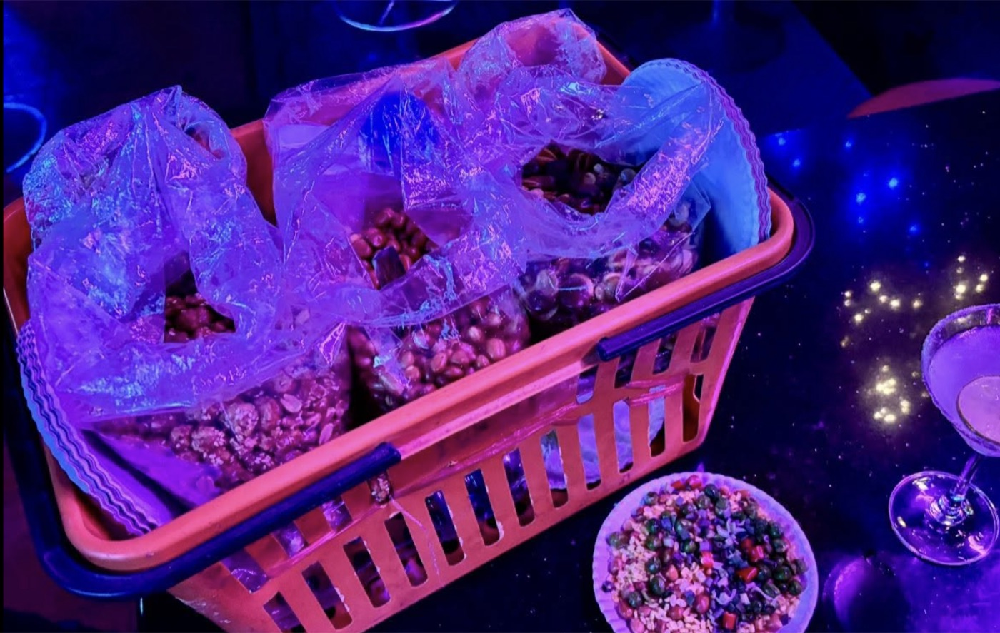

मलेशिया
बाबा-न्युनिया की बात और पेनांग में दोस्त की याद!
मलक्का और पेनांग की पेरानाकन संस्कृति, बाबा-न्युनिया परिवारों की विरासत, और एक पुरानी याद पर आधारित यात्रा वृत्तांत.
पूरा लेख पढ़ें →Travelling
Moments from conferences, fellowships and travels along the way.
मलक्का और पेनांग की पेरानाकन संस्कृति, बाबा-न्युनिया परिवारों की विरासत, और एक पुरानी याद पर आधारित यात्रा वृत्तांत.
पूरा लेख पढ़ें →
एक छूटी हुई फ्लाइट के बाद बैंकॉक की एक अजनबी रात में सोइ काउबॉय, बारटेंडर दाओ और देवरिया के भुजा-बेचकों से हुई एक अनोखी मुलाक़ात.
पूरा लेख पढ़ें →
जेएनयू के पुराने साथियों से लंदन में मुलाक़ात, मार्क्स की समाधि पर एक शाम, और अखिल की किताब पर एक दोस्त का आत्मीय नोट.
पूरा लेख पढ़ें →